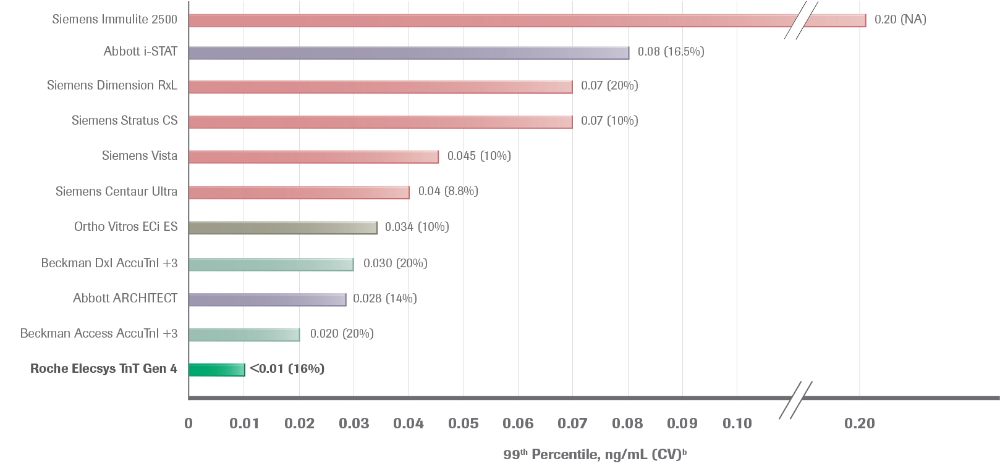

Roche Troponin T has a low 99th percentile value 7,23,24
Our competitors have a wide range of 99th percentiles (ng/mL) used in their various TnI assays.7
Even the same reagent has different 99th percentiles on different instruments.
Here again, we are referring to Beckman. They have the same reagent, but when used on different instruments, it performs differently and therefore causes them to have two different 99th percentile values.
How confident would you be that a patient is at low risk when they have a detectable troponin level of 0.032 ng/mL?
What about at 0.01 ng/mL?